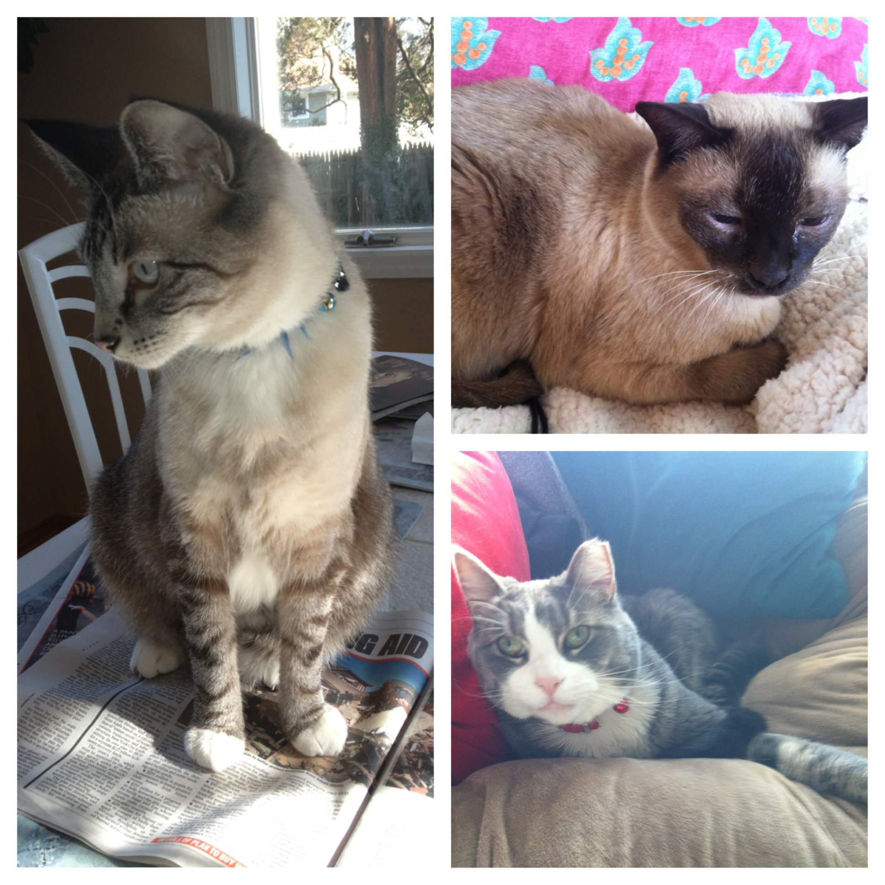

Cats, Chocolate + Commas.
Kristin is finishing up her second and last year of graduate school at the University of Florida. She received her B.A. in English Literature and Rhetoric from Binghamton University in New York. Although missing home, she loves the Southern sun. In May, Kristin will be receiving a Master of Arts in Mass Communication with the hope of one day becoming an editor in a publishing house or at a magazine/newspaper. Her thesis will be completed in the spring and focuses on media coverage of Operation Protective Edge — how the press framed the latest violence in the Israeli-Palestinian conflict. Her research interests are in editorial content, media freedom, media effects and international communication.
She also enjoys reading and writing about the arts and culture, health and fitness, traveling and the environment. Kristin has wanderlust and hopes to see the world one day. In her spare time, you could usually find her reading and editing books, cuddling with her cats and fiancé, eating (chocolate probably) and sunbathing — all her favorite things. She loves to read anything and everything by Nicholas Sparks (sorry, not sorry) and Pat Conroy. Currently she's in the middle of "The Lord of the Rings" series and Sparks' "The Best of Me" is next on her list.
Kristin aspires to give voice to those who have meaningful, thought-provoking, fantastical, inspiring stories to tell. She loves the feeling of not being able to put down a great book and hates when she finds errors in one. The worst. Please feel free to reach out to Kristin with any questions, comments or job opportunities — or if you just want to have a conversation.